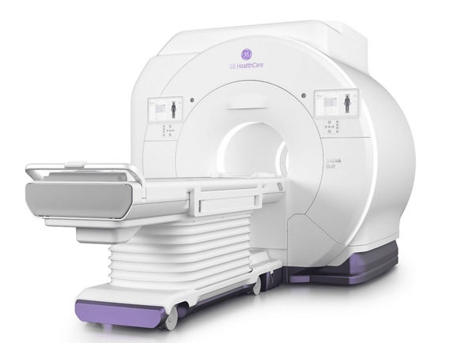
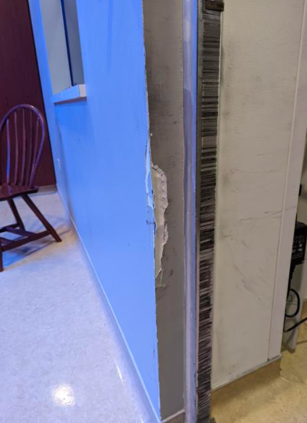
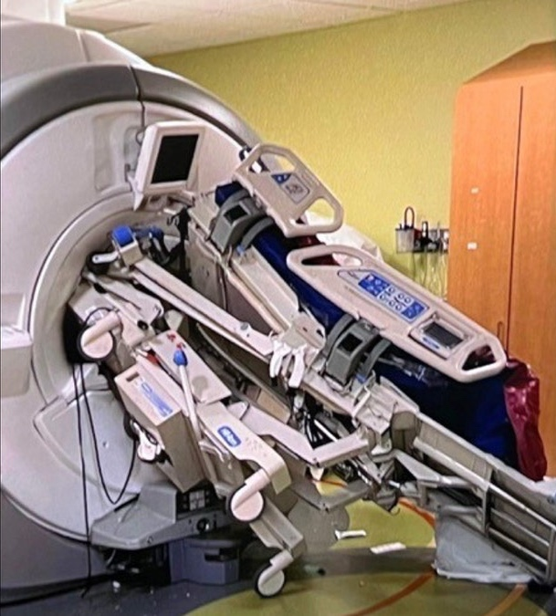
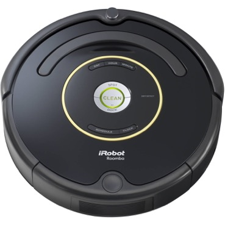

This page reproduces the on-slide text and media from
CS766_9075788365_Akram_Final_Report.pptx only—no additional technical claims.
Camera-Based Autonomous Navigation for MR Patient Tables
Najib Akram | 9075788365 | 29 April 2026
CS766 Spring 2026
Industry Mentors | Masanam Mariappan | Jason Philps
The Problem: Transport & Docking
Massive Workload: Patient tables weigh 670 lbs (300 kg) unloaded. This contributes to >50% of
technologists reporting occupational injuries and a record 16.2% MR tech vacancy rate.
Collision Damage: While modern e-drives assist with pushing, they still require manual steering.
This often results in crashing into door frames and walls, causing equipment stress and patient discomfort.
The Docking Bottleneck: A single technologist pushing from the rear has severe blind spots,
making alignment with the scanner bore a slow, tedious process of micro-adjustments.
The Goal: Build an autonomous foundation for corridor navigation and precise auto-docking, removing
this physical burden.


Why It Matters (Clinical & Business Impact)
Operational Efficiency: As MRI scan times decrease, non-scan tasks (like manually pushing the 670
lb table) become the primary bottleneck for throughput.
Greater Patient Focus (“Eyes Up”): Currently, technologists stare at the floor and wheels to
avoid collisions. Autonomy allows them to keep their “eyes up” and focused entirely on patient care and comfort.
Talent Retention: With a 16.2% vacancy rate, hospitals cannot afford to burn out staff on heavy
labor. Automating transport is crucial for workplace satisfaction and reducing the >50% injury rate.
Competitive Edge: Competitors (like Siemens) are already patenting patient table autonomous
navigation. Proving this technology keeps us ahead of the curve.
Why Build a Custom MR-Specific Robot? (The “Build vs. Buy” Decision)
The MR Constraint: High-field MRI suites are hazardous environments for standard robotics.
Strong magnetic fields restrict the use of typical sensors like spinning LiDAR (due to ferrous motors/magnets).
The “Build vs Buy” Reality: There are no off-the-shelf consumer or warehouse robots designed for
this unique constraint and the specific geometry of patient table docking.
The Vektor Approach: By building our own camera-centric (LiDAR-free) prototype, we maintain
complete control over the safety architecture, sensor choices, and software stack required for eventual clinical
integration.


The Hardware Foundation (Ground-Up Integration)
Compute
NVIDIA Jetson Orin running Ubuntu 22.04 + ROS 2 Humble
On slide 10: “click to play video. Increase volume”
Future Work & Conclusion
Advanced Semantics: On-camera neural inference to detect clinical staff
Dynamic Safety Margins: Adjust behavior based on detected humans
Clinical Integration: Transfer to actual MR patient table hardware
Acknowledgements
Leadership & Support
Masanam Mariappan, Jason Philps, Chinmoy Goswami, Kavitha Nair & GE Healthcare.
Academic Guide
Dr. Mohit Gupta (for approving and guiding this project).
Project Genesis
Jason Philps, Nicolas Escobar, Andrew Moulton, & Mark Schmieding (Smart Navigation Assist).
Engineering & Build
Jesse Daugherty (Mechanical), Mike Edwards (Electronics), Dave C, Rick and Dana (Bay).
Written submissions
PDFs compiled from coursework LaTeX (not duplicated here as narrative):
proposal, midterm,
final. Sources in repo root: mr_patient_table_proposal.tex,
mr_patient_table_midterm.tex.